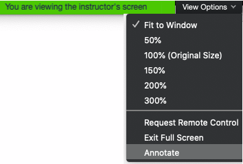

Finding and accessing
survey data
SOCI 502
Oct 26, 2020
Jeremy Buhler
Data Librarian, UBC Library Research Commons
jeremy.buhler@ubc.ca
Objectives
- learn where to look for data
- understand the components of a dataset
- know where to get help
To annotate in a Zoom presentation

Never looked for survey data
Have analyzed survey data
UBC Library data and statistics guide
Public Use Microdata Files (PUMFs)
A microdata file that may have some variables suppressed or aggregated to protect respondent privacy
- Census of Canada
- National survey series
- General Social Survey (GSS)
- Canadian Community Health Survey (CCHS)
- COVID-19 crowdsourcing series
Statistics Canada Open License
Selected data sources
- Abacus
- Nesstar
- ICPSR